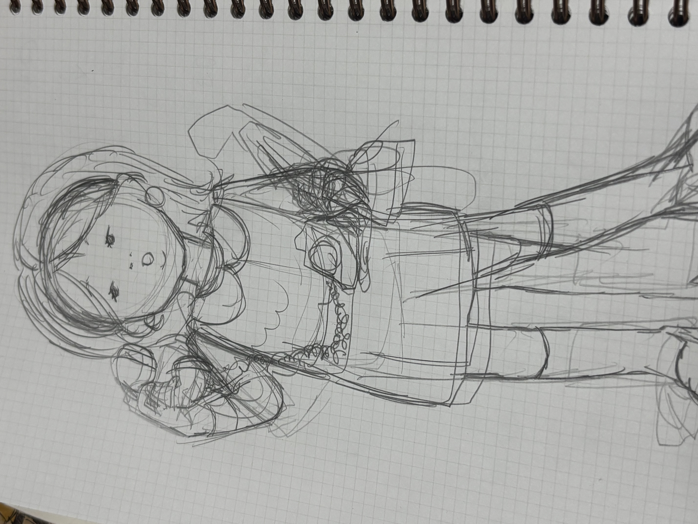
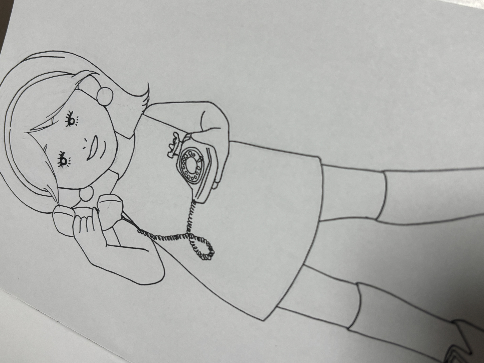
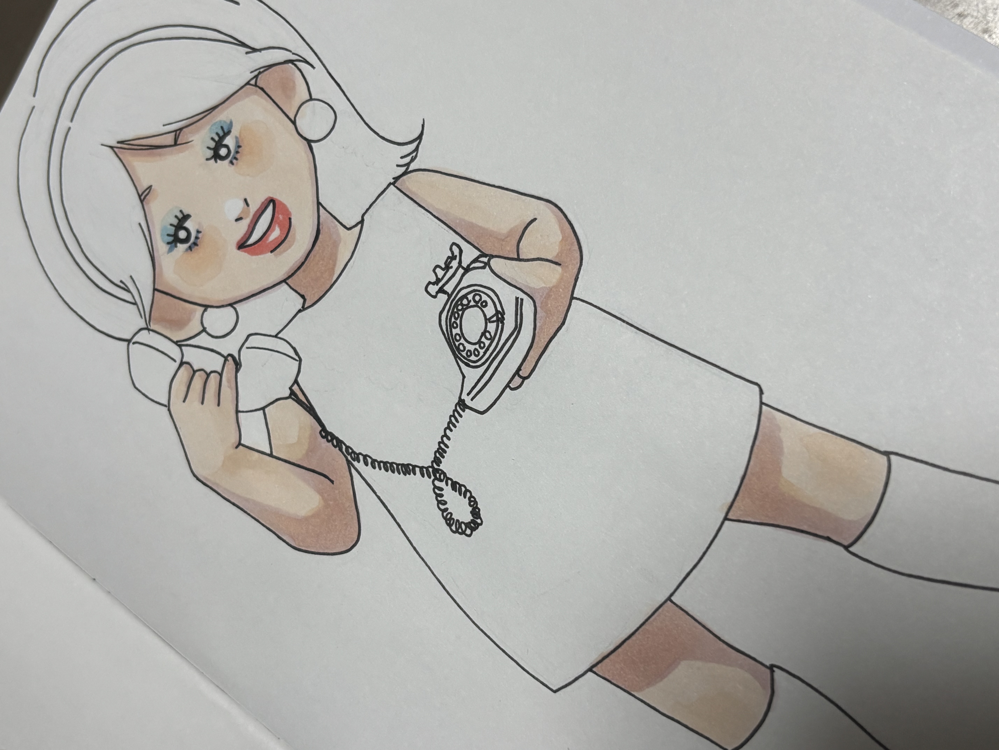
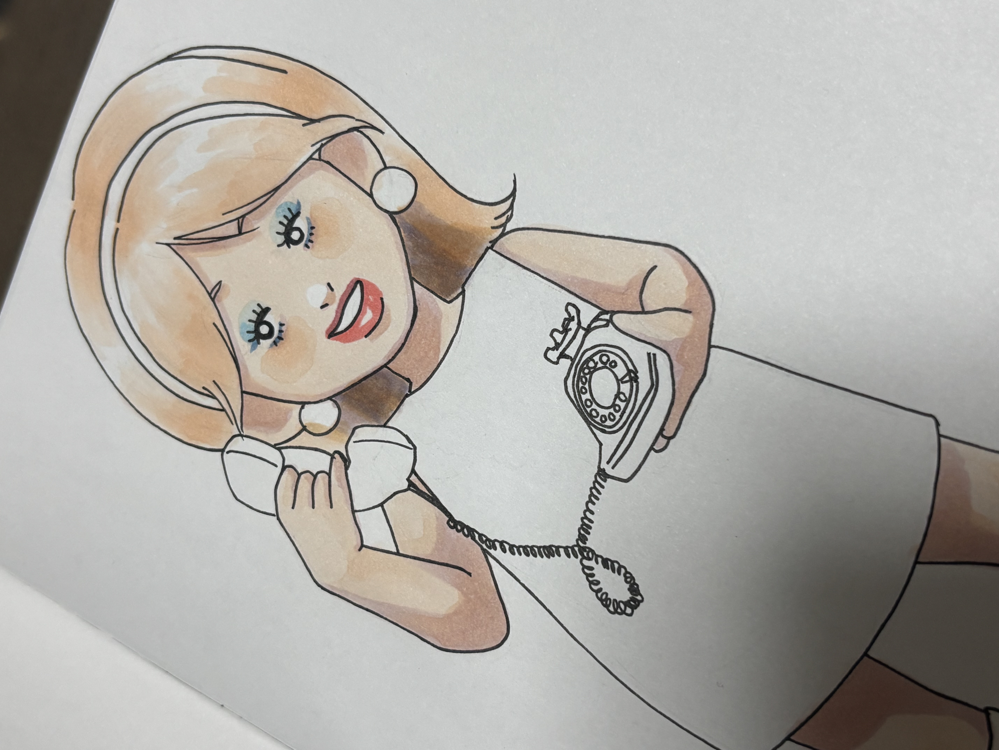
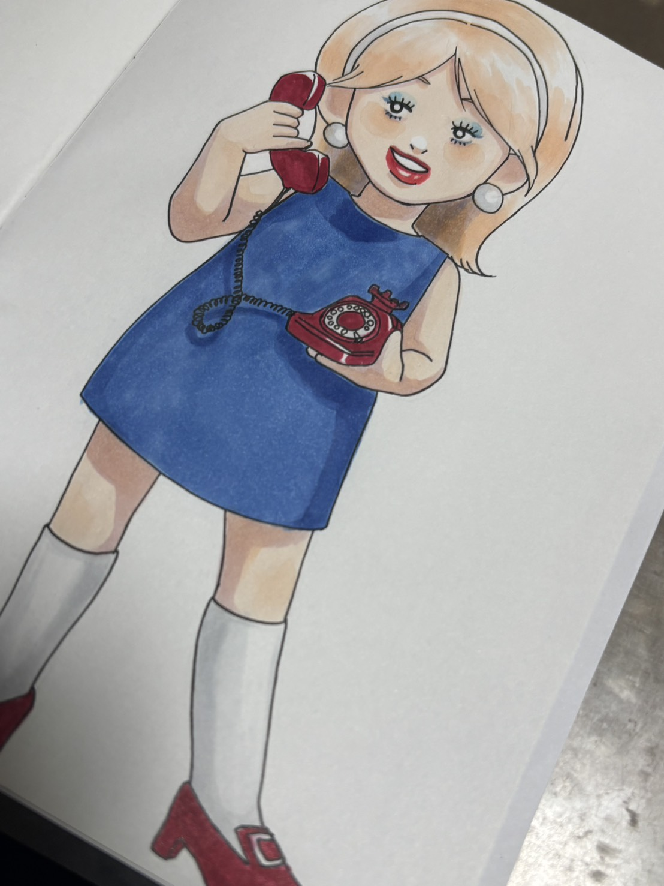
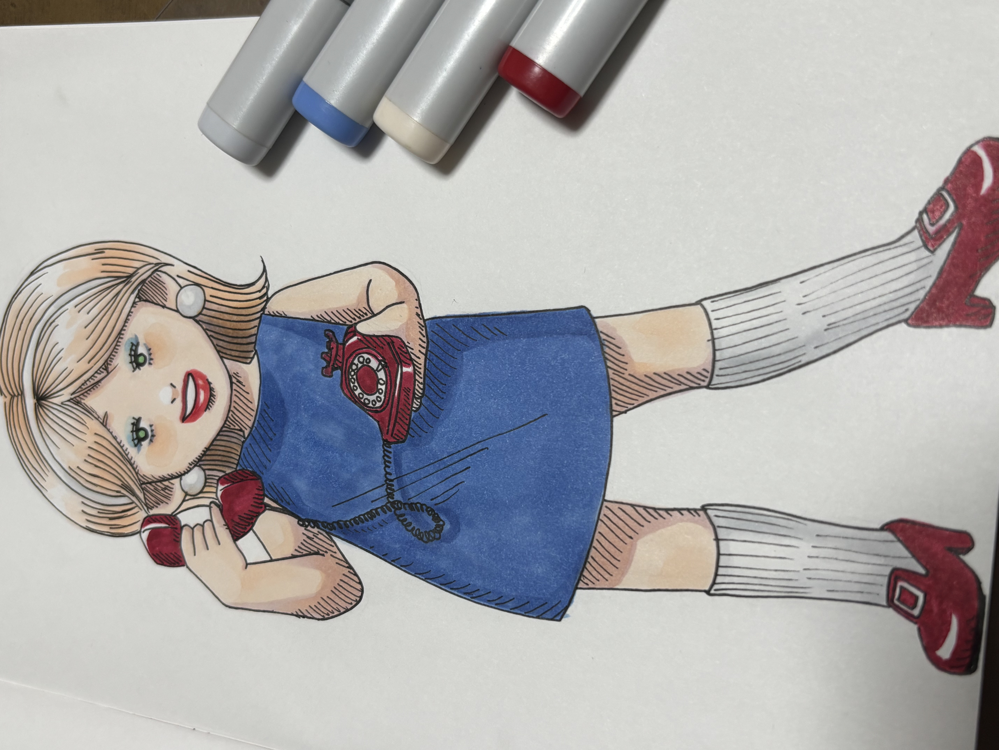

イラストメイキング
普段どんな流れでイラストを描いているのか、 ゆるっと紹介するページです。 使っている画材や、描くときに意識していることなどをまとめています。
目次
① 下書き

シャーペンで下書きを描いていきます。 最近はクルトガを使うことが多いです。
▲ 先頭へ戻る② 線画

Vコーンで線を描きます。 黒いはっきりした線で描けるので、一気に絵が綺麗に見えてきます。
▲ 先頭へ戻る③ 色塗り



コピックで色を重ねていきます。 私は肌の色から塗り始めて、次に髪の毛、服、小物の順で色塗りを進めていきます。
▲ 先頭へ戻る④ 仕上げ

Vコーンで陰になる部分に線を入れて陰影を分かりやすくします。 最後に全体のバランスを見て、必要なら色を足します。
▲ 先頭へ戻る